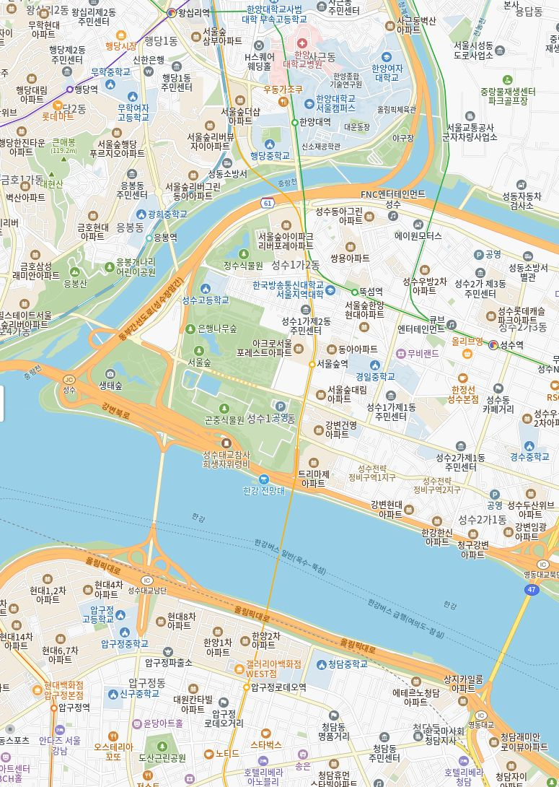

12:00 ▰
▂▄▆ ◉ ▰
연구용 · 가상 상품 및 주차 현황

성수동 지도 배경 · 표식은 가상 위치
지도: Kakao 캡처
공유
ON
주차권
ON
＋
−
◎
⌕
목적지 또는 주소 검색
♩ AI
☷
오늘 · 1시간
월주차
♧ 세차
👍 제안
당일권
시간권
야간권
연박권
✓ 거리순
✓ 가격순
⟳ 현위치 재검색
〈
구매하기
〈
검색
통합검색
최근 검색
성수동 또는 주차장 이름을 검색해 보세요.
날짜 및 이용시간
2026년 10월
〈 〉
주차 예정 시간
닫기
선택 완료
✓
테스트가 끝났습니다
선택 결과를 이 브라우저에 기록했어요.
실제 구매·예약·결제는 진행되지 않았습니다.
다시 테스트하기
데이터를 불러오고 있습니다.